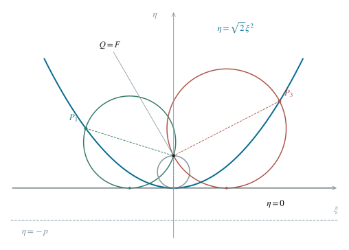

2.1 联立方程，确定唯一交点 A
由 y=1−x 代入椭圆方程，并乘以正数 t(1−t)，得到
(1−t)x2+t(1−x)2x2−2tx+t2(x−t)2=t(1−t),=0,=0. （1）因此交点唯一，且
A=(t,1−t). （2）直线 l 实际上是这一族椭圆的共同切线。也可用柯西不等式核验：椭圆上 (x+y)2≤(t+1−t)(x2/t+y2/(1−t))=1，x+y=1 的等号条件恰给出此点。
2.2 用沿弦的参数求第二交点
直线 l:x+y=1 的一个方向向量是 (1,−1)。它与 (1,1) 的内积为 1−1=0，所以垂直方向可取 (1,1)。将过 A 的直线参数化为 (x,y)=(t,1−t)−λ(1,1)。代入椭圆时，第一项展开为 t−2λ+λ2/t，第二项为 (1−t)−2λ+λ2/(1−t)；常数相加为 1，而 1/t+1/(1−t)=1/[t(1−t)]，故：
t(t−λ)2+1−t(1−t−λ)2−4λ+t(1−t)λ2λ(λ−4t(1−t))=1,=0,=0. （3）根 λ=0 对应 A；因 0<t<1，另一根 4t(1−t)>0，确实给出不同的点 B。因此
B=(t−4t(1−t), 1−t−4t(1−t)),P=(2t2−t, 2t2−3t+1),∣PA∣=22t(1−t). （4）中点坐标由 P=(A+B)/2 得到：横坐标为 t−2t(1−t)=2t2−t，纵坐标为 1−t−2t(1−t)=2t2−3t+1。向量 A−P=2t(1−t)(1,1)，其模为 2t(1−t)12+12=22t(1−t)，这里用到了 t(1−t)>0。
2.3 引入对称参数，直接求出定值
令 s=2t−1，则 −1<s<1，且 t(1−t)=(1−s2)/4。中点坐标变成
P=(2s2+s,2s2−s),∣PA∣=21−s2. （5）利用恒等式 u2+v2=((u+v)2+(u−v)2)/2，对 P−Q 的两个分量计算，
∣PQ∣2=21[(s2−41)2+s2]=21(s4+21s2+161)=21(s2+41)2. （6）由于 s2+1/4>0，开平方没有符号歧义：
∣PQ∣=2s2+1/4,∣PA∣+∣PQ∣=425=852. （7）2.4 求圆心、半径，验证公共切线
以 PQ 为直径的圆记为 Cs，圆心为 M=(P+Q)/2，半径为 r=∣PQ∣/2。因此
M=(4s2+s+161,4s2−s+161),r=22s2+1/4>0. （8）由式（8），圆心坐标和为 Mx+My=s2/2+1/8=(s2+1/4)/2，恰是半径的 2 倍。这提示考察法向量为 (1,1)、经过原点的直线 x+y=0。其到圆心的距离为
d(M,x+y=0)=2∣Mx+My∣=22s2+1/4=r. （9）等式对所有 s∈(−1,1) 成立，所以所求直线存在，可以取
将圆心沿法向量 (1,1) 投影到切线，得到 T=M−[(Mx+My)/2](1,1)。代入圆心坐标，二次项与常数项分别消去，故 T=(s/4,−s/4)。于是 Tx+Ty=0，且 ∣MT∣=r；MT 平行于法向量，因而垂直于直线，完整验证了相切关系。
2.5 用正交坐标识别几何背景
令 ξ=(x−y)/2、η=(x+y)/2。对任意位移 (Δx,Δy)，有 (Δξ)2+(Δη)2=[(Δx−Δy)2+(Δx+Δy)2]/2=(Δx)2+(Δy)2，因此这个坐标变换保持长度。由式（5）相减、相加分别得到 xP−yP=s、xP+yP=s2，所以：
ξP=2s,ηP=2s2=2ξP2,∣ξP∣<21. （11）与标准式 ξ2=4pη 比较，p=1/(42)。抛物线的焦点为 (0,p)，转回原坐标正是 Q=(1/8,1/8)；准线为 η=−p，即 x+y=−1/4。
焦点—准线定义给出 ∣PQ∣=ηP+p。同时 ∣PA∣=1/2−ηP，故相加必为定值。直径圆的圆心纵坐标为 (ηP+p)/2，恰好又等于半径，所以圆族都与顶点处切线 η=0 相切。

在保距离的 (ξ,η) 坐标中，中点轨迹为抛物线，Q 为焦点；各个直径圆都与 η=0 相切。
2.6 若要求列出所有公共切线
这一问只需证明存在，仍可进一步证明刚得到的直线是唯一的。设任一固定直线为 αξ+βη+γ=0，归一化使 α2+β2=1。在旋转坐标中，
ξM=22s,ηM=r=22s2+1/4. （12）到直线距离等于半径，平方并乘以 8，得到对整个 (−1,1) 恒成立的多项式恒等式
[αs+β(s2+1/4)+22γ]2=(s2+1/4)2. （13）左侧最高次项来自 (βs2)2，其系数为 β2；右侧 s4 系数为 1，故 β2=1。结合归一化条件 α2+β2=1，得到 α=0。此时左侧成为 [βs2+β/4+22γ]2，其 s2 系数为 2β(β/4+22γ)=1/2+42βγ；右侧相应系数为 1/2。所以 βγ=0，而 β=±1，得 γ=0。直线因而唯一为 η=0，即 x+y=0。
这里能够比较系数，是因为两侧之差是一个多项式，并在 (−1,1) 的无穷多个点为零。非零的 m 次多项式至多有 m 个不同零点：每出现一个根就可分出一次因子，次数随之减一。因此该差只能是零多项式。